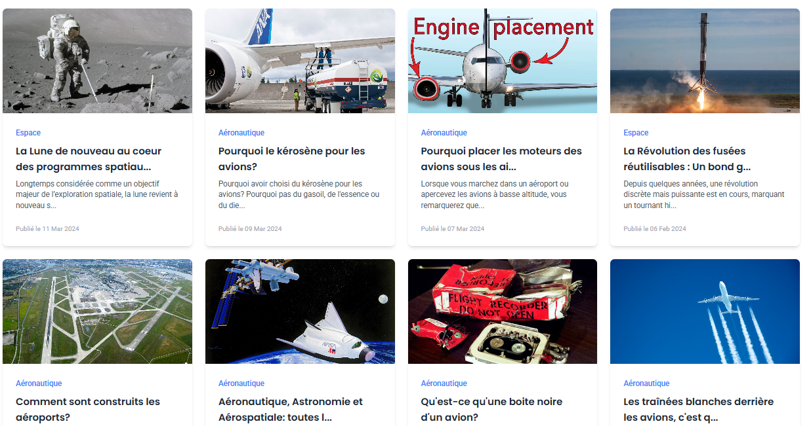

Cofondateur de SpaceAirMasters

Plateforme de vulgarisation aérospatiale
SpaceAirMasters est une plateforme de vulgarisation dédiée à l’aéronautique et à l’aérospatial, créée pour rendre ces domaines scientifiques et technologiques accessibles au plus grand nombre...
-
Équipe pluridisciplinaire
Sept élèves ingénieurs aux profils variés et complémentaires, alliant technique, science et communication. -
Valeur ajoutée
Une diversité de compétences garantissant des contenus fiables, accessibles et à forte valeur éducative. -
Audience du blog
Plus de 100 000 visites par trimestre -
Présence multicanale
Diffusion active sur nos pages LinkedIn et Facebook et une chaîne WhatsApp -
Impact direct
Plus de 4 000 jeunes touchés via WhatsApp, dont 92% au Burkina Faso, 5% au Maroc, 2% en France